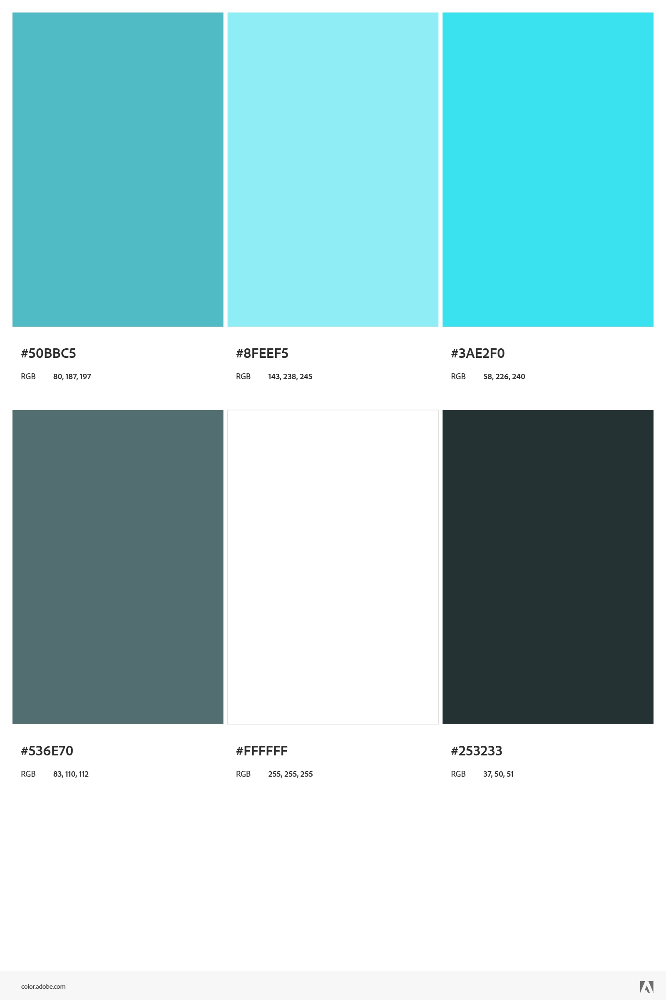

Class of 2024
CS & ECE. I've taken most of the CS courses tbh
| I can actually digest wood! | This is using a google font. |
| AND this is using a color palette! |  |
| Note: #536E70 should be #26393A instead. |
Working experience
I have experience with all of the requested languages, as well as experience with refactoring code. Not as much experience with unit testing but I've done it before